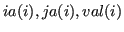

call psb_sp_getrow(row, a, nz, ia, ja, val, info, &
& append, nzin, lrw)
- Type:
- Asynchronous.
- On Entry
-
- row
- The (first) row to be extracted.
Scope:local
Type:required
Intent: in.
Specified as: an integer  .
.
- a
- the matrix from which to get rows.
Scope:local
Type:required
Intent: in.
Specified as: a structured data of type spdatapsb_Tspmat_type.
- append
- Whether to append or overwrite existing output.
Scope:local
Type:optional
Intent: in.
Specified as: a logical value default: false (overwrite).
- nzin
- Input size to be appended to.
Scope:local
Type:optional
Intent: in.
Specified as: an integer . When append is true, specifies how many
entries in the output vectors are already filled.
- lrw
- The last row to be extracted.
Scope:local
Type:optional
Intent: in.
Specified as: an integer , default:  .
.
- On Return
-
- nz
- the number of elements returned by this call.
Scope:local.
Type:required.
Intent: out.
Returned as: an integer scalar.
- ia
- the row indices.
Scope:local.
Type:required.
Intent: inout.
Specified as: an integer array with the ALLOCATABLE attribute.
- ja
- the column indices of the elements to be inserted.
Scope:local.
Type:required.
Intent: inout.
Specified as: an integer array with the ALLOCATABLE attribute.
- val
- the elements to be inserted.
Scope:local.
Type:required.
Intent: inout.
Specified as: a real array with the ALLOCATABLE attribute.
- info
- Error code.
Scope: local
Type: required
Intent: out.
An integer value; 0 means no error has been detected.
Notes
- The output  is always the size of the output generated by
the current call; thus, if
append=.true., the total output
size will be  , with the newly extracted coefficients stored in
entries
, with the newly extracted coefficients stored in
entries nzin+1:nzin+nz of the array arguments;
- When
append=.true. the output arrays are reallocated as
necessary;
- The row and column indices are returned in the local numbering
scheme; if the global numbering is desired, the user may employ the
psb_loc_to_glob routine on the output.